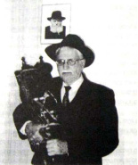

Entire Family Arrested
R’ Nosson Krepel Kublanov a”h passed away one year ago. He and his family were moser nefesh for Torah and mitzvos and for Chassidus and Chassidim in the Soviet Union. * The extraordinary story of how an entire family was arrested in the Soviet Union.

THE ARREST
At first, R’ and Mrs. Eliezer and Elka Kublanov and their five children lived in Nevel, where the children absorbed a Chassidishe chinuch. R’ Eliezer did not suffice with what he taught them but hired Chassidishe melamdim. During this period, persecution was their daily lot as R’ Krepel related:
“When we lived in Nevel, my father suffered greatly from the communists. He was arrested a number of times and thrown into jail and had all his property confiscated. They oppressed us until we could no longer live in Nevel.”
They moved to Leningrad in 1931, where the father agreed to work as a simple laborer so he would not have to work on Shabbos. He tried keeping a low profile so as not to anger the authorities. Nevertheless, the secret police laid eyes on this “simple Jew,” who had come straight from the Chassidishe town of Nevel. A year later, they accused him of illegal business dealings. R’ Eliezer was put into jail along with the Chassid R’ Shmuel Nimotin. He suffered greatly in prison, to the extent that when he returned home his relatives had a hard time recognizing him.
The persecution in Nevel and Leningrad did not deter him though, and he opened his home to Chassidim and to farbrengens. There were also Chassidishe guests who did not have a place to stay. They often became part of his household, including R’ Michoel Dworkin who had been wealthy until the communists confiscated his property.
On Yud-Tes Kislev, grand farbrengens were held in his home with many participants. This was despite the danger. These farbrengens were joyous occasions amidst the general suffering. It sometimes happened that in their celebration the Chassidim danced on the table. Why on the table? Because under the Kublanov family lived a senior police official. If they would have danced on the floor, he would have known there was a Chassidishe simcha taking place upstairs.
Once, after a particularly noisy farbrengen, the officer inquired about the noise that had disturbed his sleep. R’ Eliezer said it was just a birthday party.
“I would sit at these farbrengens for hours, mostly with my brother, listening and watching and taking in everything I saw and heard. Father was pleased by our presence. I noticed that now and then he would say something to his friends, but they were meant for me and my brother. Mother would hide a smile and tell us it was late and time to go to bed, but we sat on the edge of the bench with our eyes slowly closing as we heard the voices and the singing of niggunim. That is how we fell asleep.”
ESCAPE
During World War II, the Kublanovs underwent much travail. Leningrad is surrounded by rivers and all the bridges that connected the city with the world at large had been bombed by the Germans. During the winter when the rivers froze over, residents walked across the ice as the Nazis bombed them. On 15 Shvat 5702, the Kublanovs managed to cross over in peace. After a long difficult trip, they arrived in a village about twenty-five miles from Kazakhstan. They lived there for over two years.
The oldest child, R’ Mendel, moved to Alma Ata because of his medical studies. His medical knowledge was put to use two years later when Rabbi Levi Yitzchok Schneersohn a”h, the Rebbe’s father, arrived in Alma Ata and was sick and weak. R’ Mendel used his connections and was able to bring a doctor who tried to treat him.
Two months following the passing of R’ Levi Yitzchok, the Kublanovs moved to the street where Rebbetzin Chana lived. From that point on, they were able to be of help to the Rebbetzin. R’ Krepel told how he regularly visited her on errands from his father, and would bring her kosher products to sustain her.
At the end of World War II, the Kublanovs went to Lvov to try and leave the Soviet Union but were unable to do so. They returned to Leningrad, not suspecting what the evil communists had in store for them. The Kublanov home once again became a place where Chassidim congregated.
R’ Krepel related:
“One time, when my father returned from shul, he told my mother that the children of R’ Shmuel Pruss, Zushe and Berel, had come from Tashkent. He said that at least one of them needed to eat with us, because their mother had died and their father was in jail in Tashkent. My mother felt the boys could not be separated and she wanted to host both of them. I remember that at one lunch meal, my mother warned me not to take from the whole, nice-looking meat patties, but from the broken ones so that the Pruss guests would get the nice portions. Decades later, in Eretz Yisroel, R’ Zushe said that he still remembered the taste of my mother’s patties.”
FAMILY UNDER ARREST
After the war, many Lubavitcher Chassidim escaped the country through Lvov by using false documents belonging to Polish citizens. Then a wave of arrests put a halt to the smuggling operation. The KGB not only arrested people in Lvov, but between 1948 and 1951 dozens of Chassidim were arrested for their association with the smuggling operation. The arrests were all carried out by the KGB of Leningrad.
The arrests reached their peak at the end of the winter 5711 when many Lubavitchers were arrested including R’ Eliezer Kublanov. He was in Pinsk at the time, on business. Like the rest of the detainees, he was sent straight to Spalerka, the central prison in Leningrad where he suffered greatly from the interrogations and tortures.
In the months that followed, the KGB arrested all the sons and daughters of the Kublanov family and they were sent to Spalerka. They were interrogated and sentenced to extended incarceration for treason. R’ Krepel was also quickly sentenced and sent to Siberia.
He described the atmosphere in prison:
“I was put into a prison cell where there were other Lubavitchers; the brothers R’ Dovid Leib and R’ Avrohom Aharon Chein, and R’ Chaim Meir Mintz who died in exile. We sang niggunim the entire time. In the morning I got up and after washing my hands I called out, ‘Yidden!’ and I began singing ‘V’Taher Libeinu L’Avdecha,’ and they responded, ‘Oy Krepel, you saved us.’ The Jews who were depressed were revived by the niggun.
“It never happened that we went without a head covering, whether on the street or indoors. In jail I made myself a head covering out of a kerchief.”
For a number of years, R’ Krepel remained in exile, enduring hard labor, cold, illness and hunger. It was only with great miracles that he prevailed and returned home with the rest of his family. In his memoirs he says that upon his return to Leningrad, his father said it wasn’t time to talk but to put on t’fillin, which he had not been able do in Siberia.
***
After many years, he and his wife and children were able to move to Eretz Yisroel where he lived in B’nei Brak. He was a successful pediatrician and one of the veterans of the Chabad community in B’nei Brak.
At the Shabbos farbrengens that took place in the shul of Rechov HaRav Kook, after saying l’chaim and a Chassidishe niggun, R’ Krepel would sometimes reminisce about those awful times, about his parents Eliezer and Elka, and about the rare sight of an entire family exiled together to Siberia and hard labor. He wrote his memoirs in a book that included documents and pictures of the interrogations and exile to Siberia so that future generations would know what mesirus nefesh is.
Berger. "Entire Family Arrested." Beis Moshiach, no. 872 (March 8, 2013).